Autor: Jamil N. Castro Dias - Bolivia 2020

Instala Ubuntu 20
Con esta guia de pasos puedes instalar Ubuntu 20 en tu computadora
o podrias instalar en un virtualizador para ralizar pruebas sin ningun riesgo.
En mi caso usaré el virtulizador de VirtualBox, puedes decargar aqui para que puedas seguir los mismos pasos sin riesgos de dañar tu sistema operativo actual
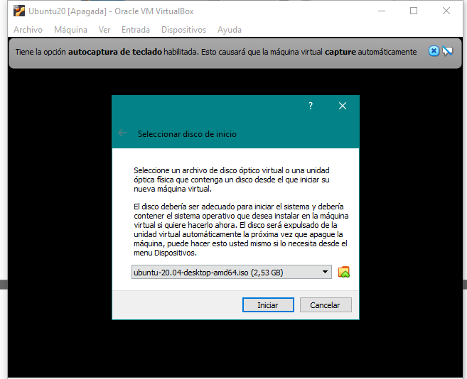
Para poder usar instalar un sistema operativo en un virtualizador primero
crear la maquina virtual dando caranteristicas que tendria una computadora real
como el tamaño del disco duro y los nucleos que se puede compartir de una
manera no afecte a tu computadora.
Una vez creado comenzamos a encender la maquina virtulal. Una vez iniciado
el programa te pedirá el disco de inicio donde debemos colocar nuestro
Archivo de Imagen de Disco que lo puedes descargar
desde aqui y colocamos Iniciar
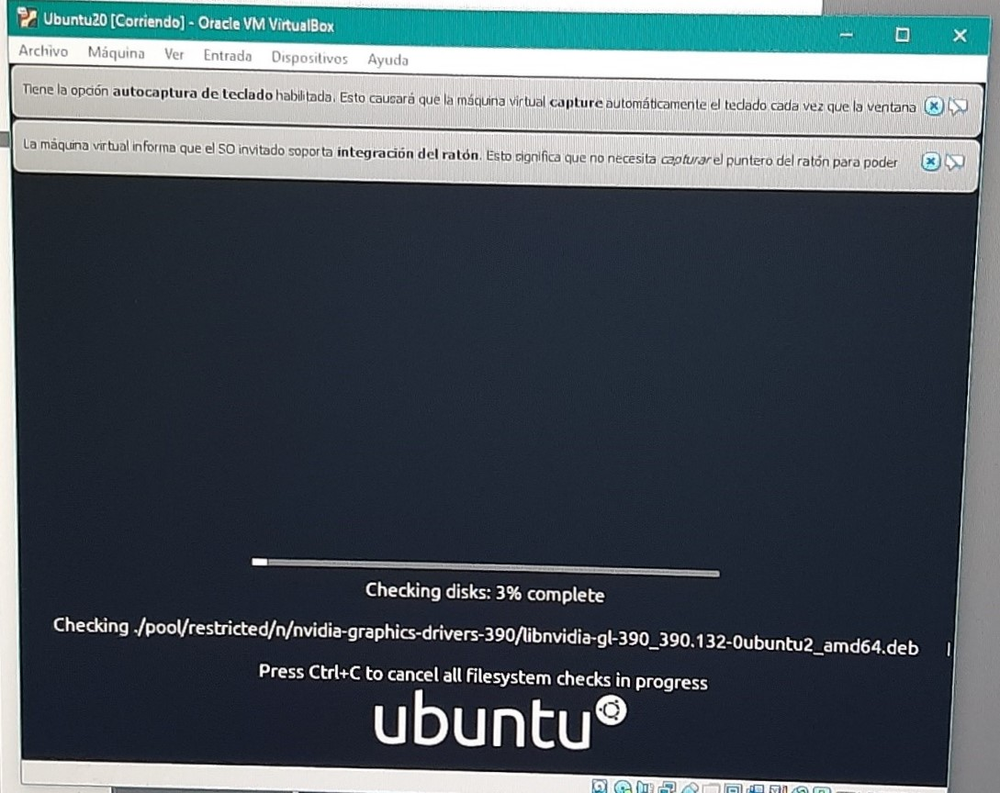
Tendremos que esperar a que termine el proceso.
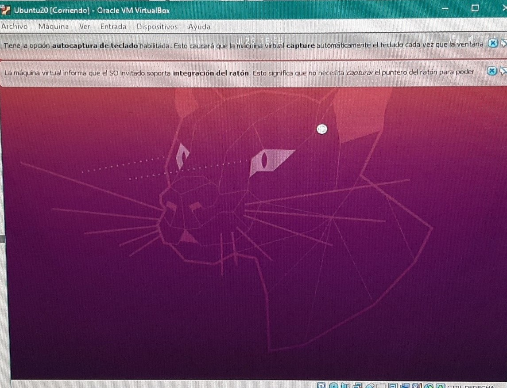
Ahora ya termino el proceso para poder continuar con la instalacion.
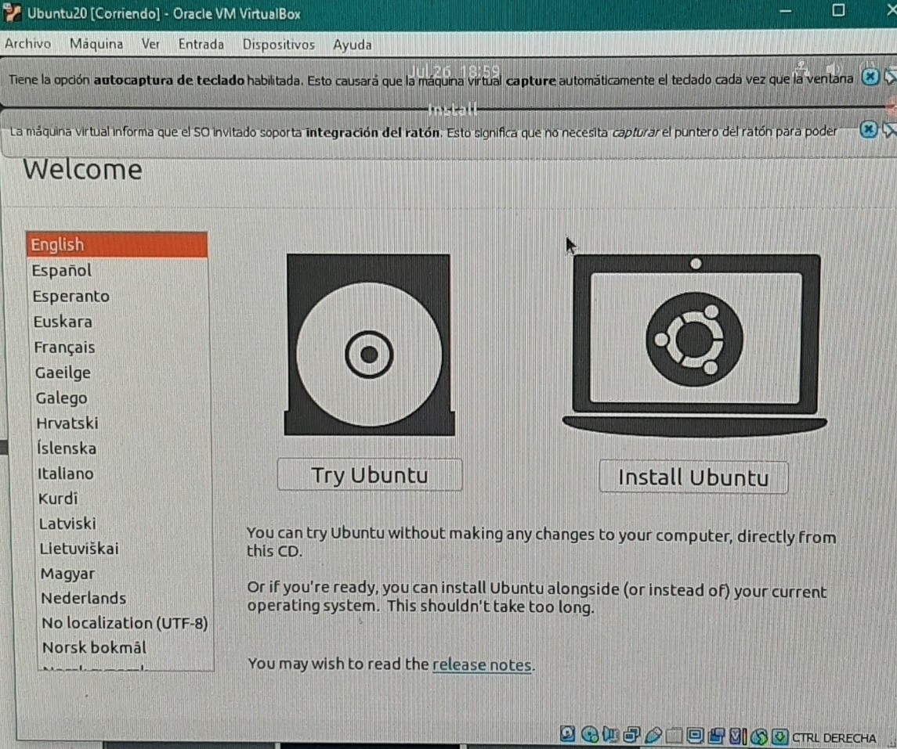
Aquí empesamos con el proceso de la intalacion donde tenemos dos opciones
donde podemos elegir el idioma Español y le damos a Install Ubuntu
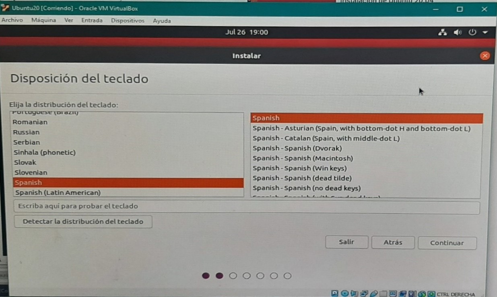
Aquí nos pregunta la Disposición del teclado le damos en Español o al idioma
o español que necesite y le damos a CONTINUAR.
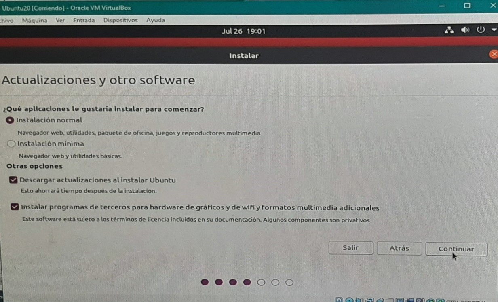
Luego nos pregunta si queremos instalar las actualizaciones ahí tienes las opciones
para descarlas o marcarlas yo las marque por que es importante marcar la parte de
instalar programas de terceros y bueno despues de seleccionar le damos a CONTINUAR.
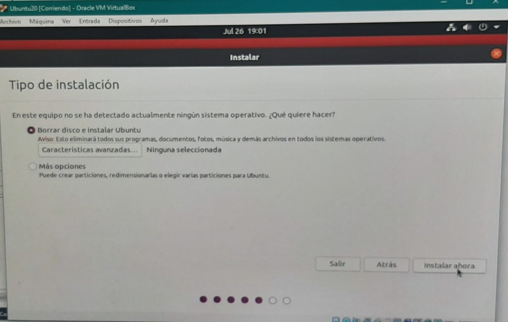
En esta opcion no cambiamos nada y presinamos en donde dice INSTALAR AHORA.
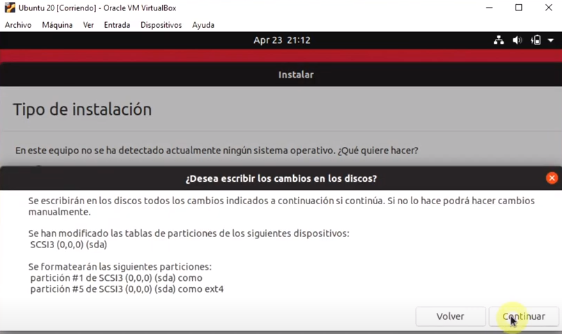
En esta opcion le decimos que si continuar va cargar todos los cambios en el disco.
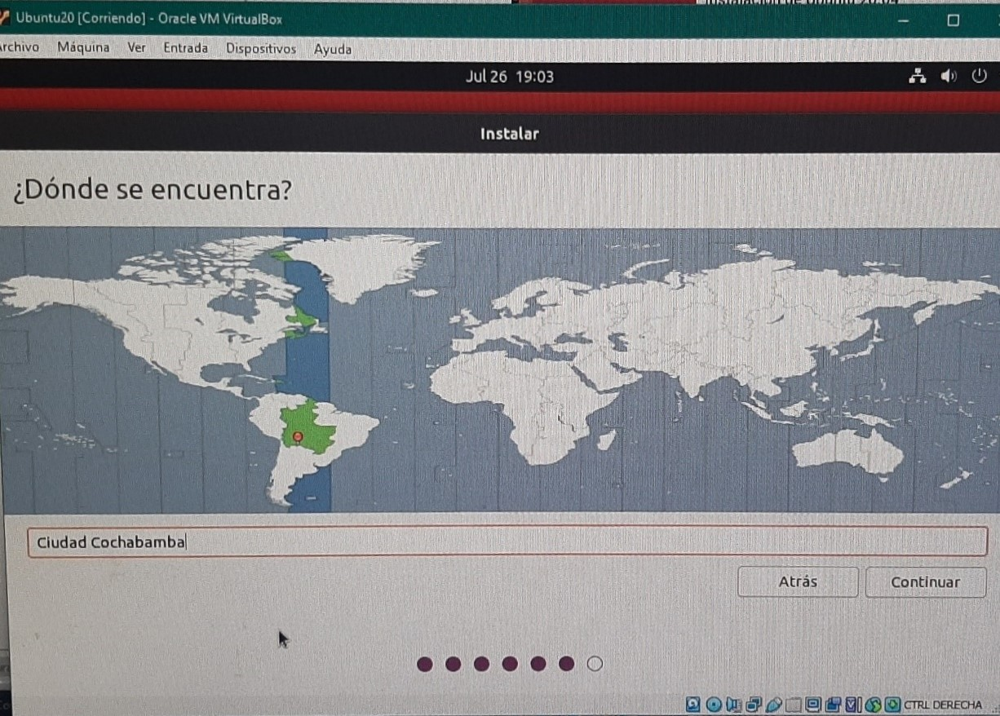
Aquí elegimos nuestro país en el que estemos y presionamos CONTINUAR .
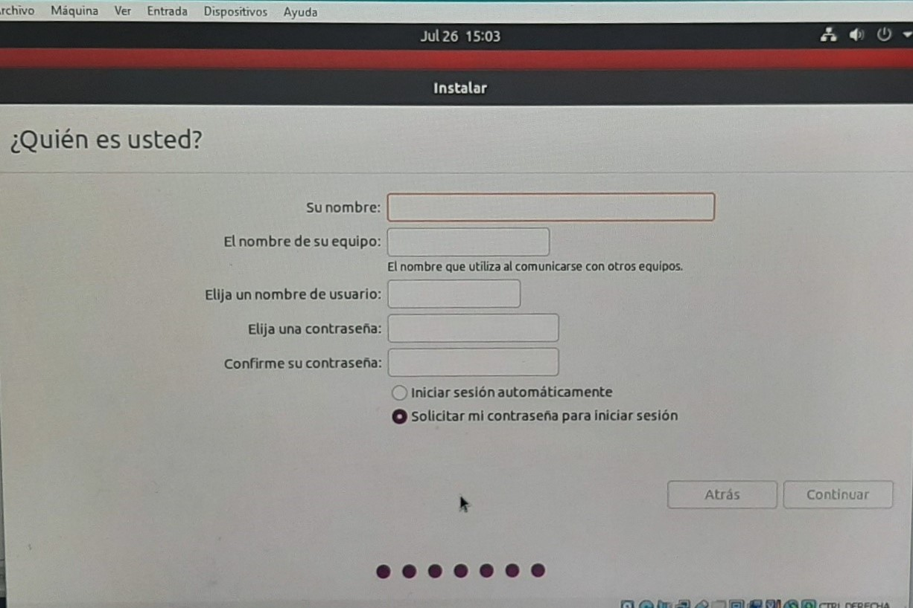
Ahora es nacesario ingresar un nombre de usaurio, tambien puede colocar una
contraseña. Una vez ingresado todos los datos requeridos presinamos en Continuar.
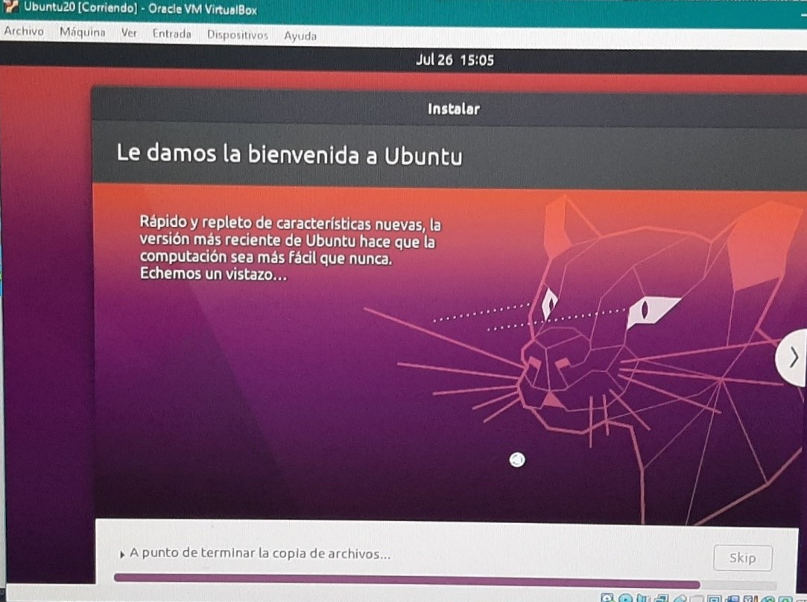
Ahora solo falta esperar para que se instale el sistema operativo, esto puede
demorar bastante tiempo.
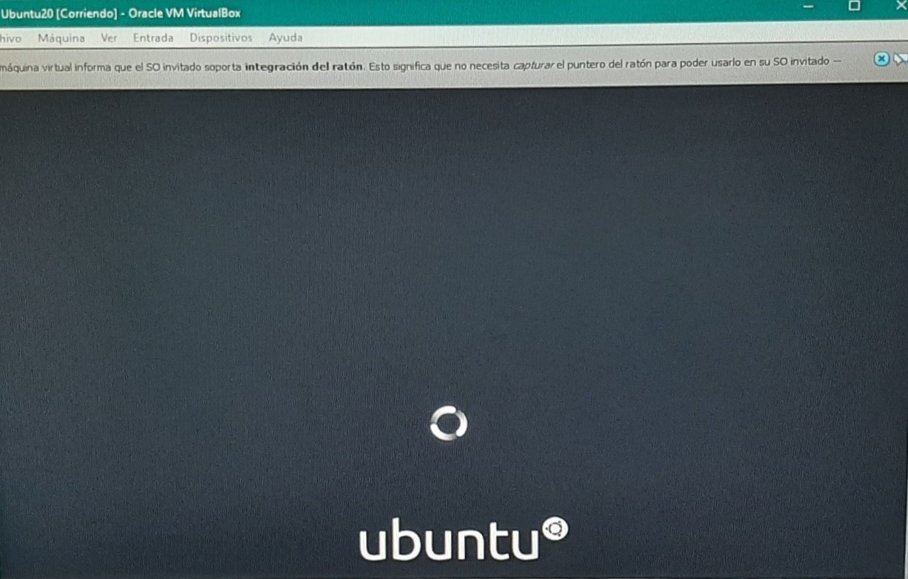
Una vez terminada la instalación debemos esperar a que se inicie por completo.
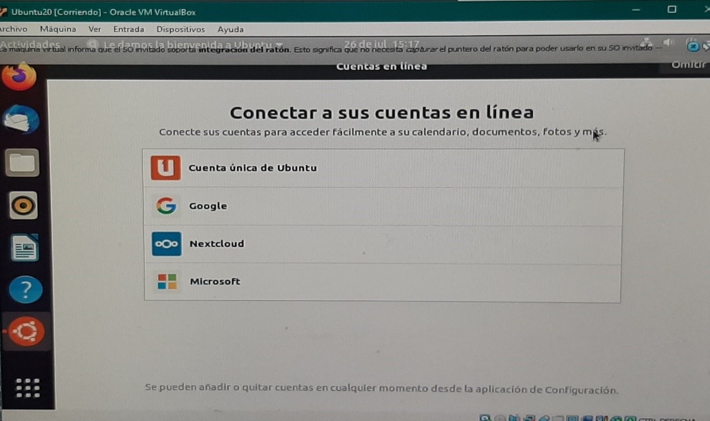
Cuando termina de iniciar puedes conectar con una de las lineas,como una cuenta de
google o Microsoft, pero si no quieres conectar a un cuenta le das en la opccion OMITIR.
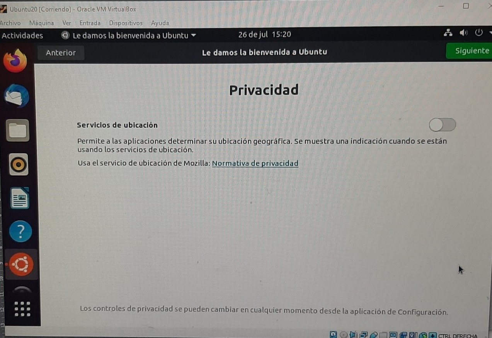
Aquí los servicios de ubicación si quieres o no, no es obligatorio aceptar, luego presionamos SIGUIENTE.
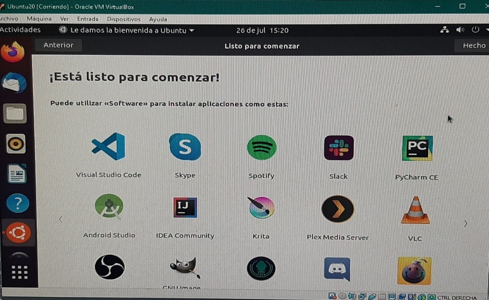
Bueno y en fin aquí ya tenemos instalado y funcionado en el VirtualBox en
donde ya podemos trabajar, nabegar, y hacer muchas cosas mas.
Visitado el: